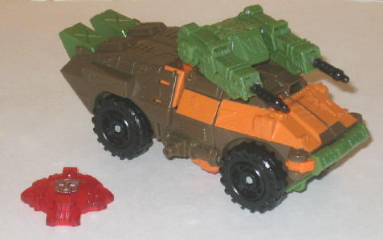
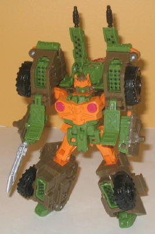
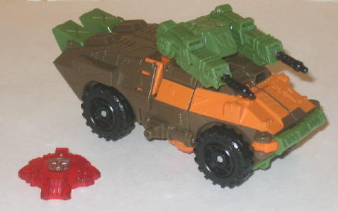
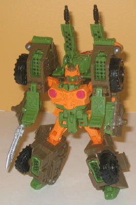
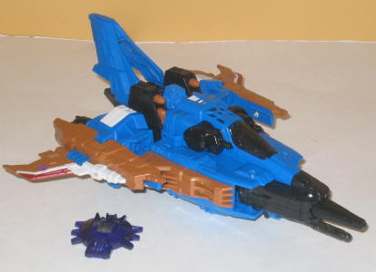
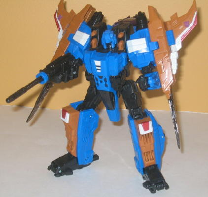

 
Allegiance : Autobot
Size : Deluxe
Difficulty of Transformation : Easy
Color Scheme : Dull dark muddy brown, dull dark military green, orange, and some black, silver, dull sky blue, and dark red
Rating : 8.6
Set Price
: $30 U.S.
Series
: Classic/Generation One
 Autobot
Roadbuster
Autobot
Roadbuster


Allegiance
: Autobot
Size
: Deluxe
Difficulty of Transformation
: Easy
Color Scheme
: Dull dark muddy brown,
dull dark military green, orange, and some black, silver, dull sky blue,
and dark red
Rating
: 8.6
(NOTE: Because this is a repaint, this is not a full-blown review. This mainly covers any changes made to the mold and the color scheme, and merely compares it to Cybertron Defense Hot Shot. For a review on the mold itself, read the review of Cybertron Defense Hot Shot here .)
Roadbuster is a direct
homage to the G1 character of the same name, as is evident from the color
scheme, which is nearly identical. The toy has a similar alt mode as G1
Roadbuster, as well. The brown/green/orange color scheme can't be pulled
off well on a lot of toys, but for the most part it works well on this
rough-'n-tumble mold. The orange is used in just the right amount so that
it provides excellent contrast against the brown and green without being
used so much that it becomes overly loud. (I particularly like the orange
stripe in vehicle mode, which gives that mode some BADLY needed light coloration.)
The green and brown are fairly dull colors themselves, though, and some
of the color placement in Roadbuster's robot mode is odd. His arms have
no real contrast colors on them, and his face is green with blue optics,
which just looks... bad. It appears at first that Roadbuster doesn't have
a whole lot of paint apps on him, particularly in vehicle mode, but this
isn't true-- in fact, he actually has a higher-than-average number on him.
However, many of his plastic pieces are simply completely covered with
paint to get his overall color layout as close to the original Roadbuster's
as possible, which I assume wasn't possible with the overall layout of
the mold colors. His upper legs are completely painted orange, and his
wheels are even painted black! Still, he LOOKS a bit bland, regardless
of how many paint apps he actually uses.
No mold changes have
been made to Universe 2.0 Roadbuster.
 Dirge
Dirge


Allegiance
: Decepticon
Size
: Voyager
Difficulty of Transformation
: Easy
Color Scheme
: Moderately dark blue,
moderately light muddy brown, black, and some pale glittery off-white,
dark red, and transparent tinted plastic
Rating
: 8.9
(NOTE: Because this is a repaint, this is not a full-blown review. This mainly covers any changes made to the mold and the color scheme, and merely compares it to Cybertron Voyager Starscream. For a review on the mold itself, read the review of Cybertron Voyager Starscream here .)
Like Roadbuster, Dirge
here is an homage to the G1 character, being a Seeker (i.e., repaint of
a Starscream mold) in similar colors, though he doesn't have the "conehead"
that he popularly had in the G1 cartoon. This shade of blue and brown have
always gone together exceptionally well together when used with black as
a base color, and Universe 2.0 Dirge is certainly no exception. Dirge also
has plenty of paint applications, so he doesn't really have many large
sections of his body that are unpainted. Using off-white and red as accent
colors also works really well against the brown and blue too, particularly
on the wings. (What's especially cool about those wings is that both the
front AND back are painted, unlike on many TFs where only the front part
of a piece of plastic is painted.) Making the face black with red optics
also makes Dirge look particuarly menacing, and is a great touch. The only
real change I'd make is his transparent plastic-- it's too plain-looking
and out-of-place with the blue, maybe making it transparent purple or red
would have worked better.
No mold changes have
been made to Universe 2.0 Dirge, though his Cyber Key has been replaced
with a transparent purple "general" key-- with the Movie Decepticon symbol
on it, oddly enough.
The Roadbuster vs. Dirge set is a recommended purchase for anyone who doesn't have either of these molds yet, as they're both some of the better molds from the Cybertron line. Dirge in particularly has a great color scheme and is the stand-out 'bot of the set, though Roadbuster is also a great G1 homage too, even if some of his colors don't seem quite right in robot mode.
Reviews by Beastbot
(NOTE: In the U.S., this was supposed to come with a reprinted Transformers: Target: 2006 #3 comic, but many packages have the comic for the other Vs. pack in the assortment instead, Transformers: The War Within #2. Outside of the U.S., even though the package indicated that a comic was included with, it was in fact not for some legal reasons.)